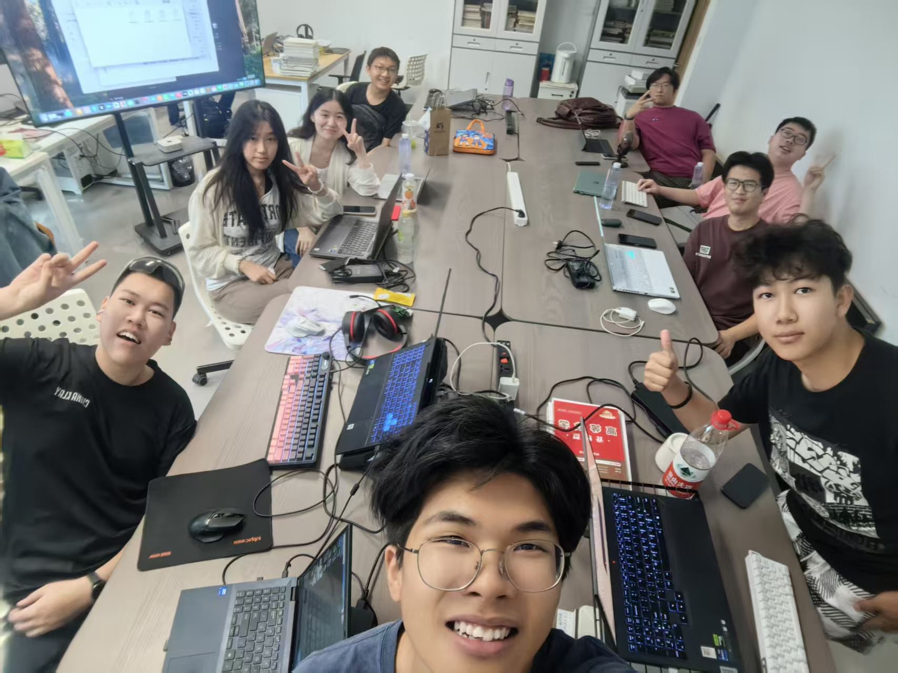
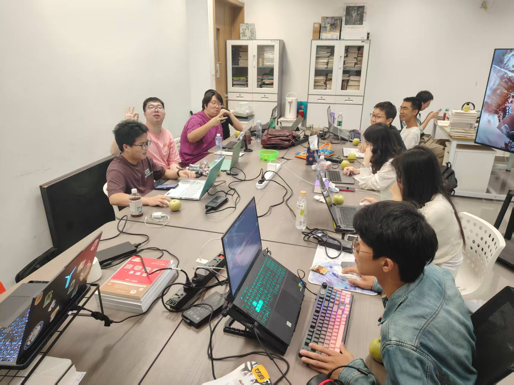

AI编程
Git版本控制
项目实战
学习历程
第1周
9月13日
9月13日
初识AI编程助手
第一次接触Claude Code，学习如何与AI进行有效的编程协作。掌握了准确描述编程需求的方法，理解了AI辅助编程的基本概念。
- 理解AI辅助编程的基本概念
- 学会清晰表达技术需求
- 掌握与AI对话的技巧
第2-4周
9月20日-10月4日
9月20日-10月4日
项目实战阶段
独立开发任务管理工具，经历了完整的软件开发流程：需求分析、技术选型、功能实现、测试调试。
HTML5
CSS3
JavaScript
LocalStorage
第5-7周
10月11日-10月25日
10月11日-10月25日
Git版本控制学习
从零开始学习Git，掌握了版本控制的核心概念和实际应用。学会了分支管理、合并操作和冲突解决。
- Git基础配置和核心概念
- 常用命令掌握：commit, push, pull, branch
- 分支管理和合并策略
第8周
11月1日
11月1日
综合实践与总结
融会贯通所有学到的技能，完善个人项目，建立系统的学习方法和思维模式。
项目经验
任务管理工具
前端开发
个人项目
这是一个功能完整的任务管理应用，帮助用户高效管理日常任务。
主要功能：
- 任务的增删改查功能
- 任务分类和优先级设置
- 数据本地存储和持久化
- 用户界面优化和交互体验
技术实现：
HTML5页面结构
CSS3样式设计
JavaScript交互逻辑
LocalStorage数据存储
遇到的问题和解决方案：
数据结构设计不合理
重新设计了数据模型，优化了数据组织方式
用户交互逻辑复杂
拆分为多个独立的功能模块，提高代码可维护性
精彩瞬间
记录我们学习过程中的美好时刻



这段学习旅程不仅让我们掌握了技术，更让我们收获了友谊和成长。
技能提升
AI辅助编程
- 熟练使用Claude Code进行开发
- 掌握与AI有效沟通的技巧
- 理解AI辅助编程的最佳实践
- 学会利用AI作为学习工具
版本控制
- Git基础操作和工作流程
- 分支管理和合并策略
- 冲突解决和版本回退
- 理解团队协作的Git工作流
前端开发
- HTML5语义化标签使用
- CSS3响应式布局
- JavaScript DOM操作
- 前端数据存储方案
项目管理
- 需求分析和功能设计
- 任务分解和时间规划
- 代码调试和问题定位
- 项目文档编写
学习心得体会
通过这段时间的学习，我对AI编程有了新的认识。AI工具确实能够提高开发效率，但它更像是一个辅助工具，最终的代码质量和项目成功仍然依赖于开发者的判断和决策。
AI协作
AI能够加速开发过程，但不能替代思考
工具运用
良好的工具使用习惯能够提高工作效率
实践项目
实践项目是巩固理论知识的最佳方式
持续学习
持续学习是技术发展的必要条件
未来学习计划
短期目标
技术深化
- 深入学习Git的进阶功能
- 完善当前项目，添加更多功能 <学习新的前端框架和技术
中期目标
能力拓展
- 参与开源项目贡献
- 学习后端开发技术
- 掌握更复杂的项目架构
长期规划
职业发展
- 成为全栈开发工程师
- 建立个人技术品牌
- 持续关注AI编程技术发展